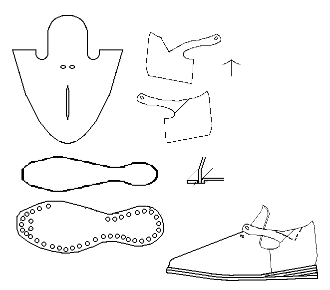
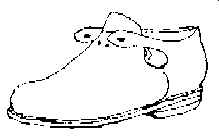

These front laced latchet shoes are based on a shoe found concealed in a half-timber house
in Watford, Herts. Any errors in the above picture are mine. The outsole is 11
oz, with hobnails. The midsole is 10 oz. The heels are spring heels. The
outside quarter is cut down in a wedge shape. The side closing seams are round
closed on the inside, with a pitch of 7. The back seam is round closed on the
outside, with a pitch of 10.
Swedish c.1639
These shoes are based on old paper patterns and J�fvert's notes in the cellar of
the Nordiska Museets, thanks to June M. Swann and D.A. Saguto.
They are made with a spring heel, not a separate heel.

Romont Gate c.1570-1600/40 (Inv. No. FRI-PL/R.ROM 604) (Illustration after M. Volken)Footwear of the Middle Ages - Historical Shoe Designs/Front Laced Latchet Shoes,
by I. Marc Carlson. Copyright 2001
This page is given for the free exchange of information, provided the Author's Name is
included in all future revisions, and no money change hands, other than as expressed in
the Copyright Page.
{kind=link}